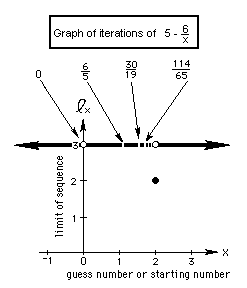

Solve the quadratic equation x2
- 5x + 6 = 0 to get x=5-6/x. Iterate the
function 5-6/x and graph the starting number vs the limit of the infinite
sequence that is formed
2b.We'll iterate the function
 starting with different numbers, then graph
the limits of the infinite sequences we get.
starting with different numbers, then graph
the limits of the infinite sequences we get.
Starting number 1. Putting 1->x, we get 5-(6/1)=-1. Putting this output
number -1 in for x now, we get 5-(6/-1) = 11. Putting 11 -> x we get
5-(6/11)= 4.45..
So we get this infinite sequence:
1, -1, 11,
4.45.., 3.653..., 3.3575..., 3.2129..., ...which goes to 3 as the
limit.
Starting no. -100, 5.06, 3.81422..., 3.4269...,
3.2491...,3.1533..., ...which goes to 3 as the limit.

Notice that starting with 2 we get a constant sequence 2, 2, 2, ... On
the graph 2 goes to 2.
All other starting numbers lead to an infinite
sequence which goes to 3 as the limit.., except an infinite number of
starting numbers like zero, and 6/5 that at some point make the denominator
go to
0 and make the fraction 'blow up' and thus has no answer. These numbers
put a hole in the graph. Can you find a rule for these numbers that
make the denominato 0? What is the limit of the sequence of these numbers?
To order Don's
materials
Back to Ch. 8, part 2- iteration
Mathman home